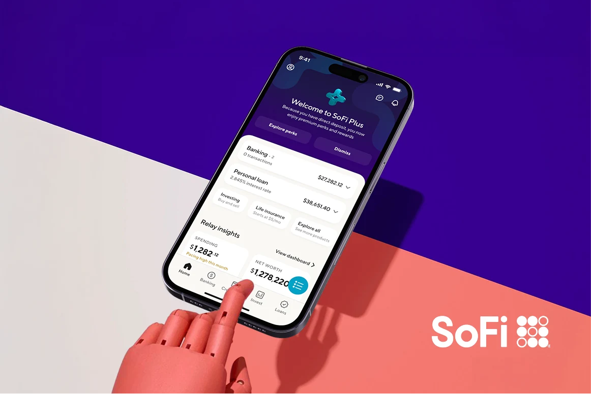
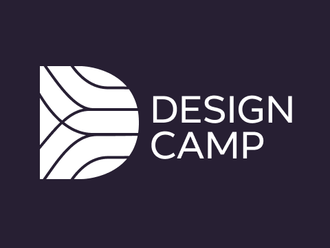
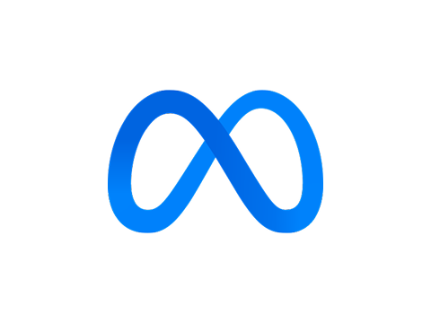

Decades of building useful 0–1 products and productive teams within global initiatives, scrappy startups and everything in between.

A 2009 conversation between friends, a decade of false starts, and a couple of months working nights and weekends with Claude.
Read essay →
Painting a bedroom mural 12 years ago has some weird parallels with how I approach Claude Code today. Hear me out.
Read essay →
I’m a design leader focused on 0–1 product work in both hardware/software and pure software environments — making hard new things real and useful at scale.
Currently I’m senior director of design for one of SoFi’s three business units, covering AI-in-product, membership, growth, premium features and personal finance. Before this I led design for Cruise’s ridehail consumer experience, and spent 10 years at Meta — most recently building the experience design org for neural interfaces in their AR division.
I’m invested most in products that do the greatest amount of good I can manage — human connection, underserved communities, trust & safety, public information, and creating access to the previously inaccessible. I’ve also co-founded two startups, advised others, and spent a few years at IDEO.

I mentor 1–2 under-represented external designers each half, with the goal to create lasting relationships.

How SoFi resolved complex navigation for very different users.

As product lead for Facebook’s design education program, I crafted and taught the curriculum for a wide variety of classes geared toward thousands of company design team members.

I created the senior mentorship circles program for the Facebook App org, and mentored 2–3 managers and designers each half.
Grounding people in the soft skills of product design: proactivity, communication and humility.
A primer on how Meta has a uniquely developed opinion on product thinking.

Examples of how designers can and should consider how their products touch people in their most vulnerable moments.

A talk grounded in three principles for designing for empathetic products.
I’m an amateur photographer with a great joy for people and the outdoors, slowly learning how much I respect videographers for the added dimensions of sound, motion and time they juggle. I’ve been lucky enough to have my work included in publications such as The New York Times.
Drop me a line at jt@jtroll.com, or through whichever social media you prefer. Thanks for reading.